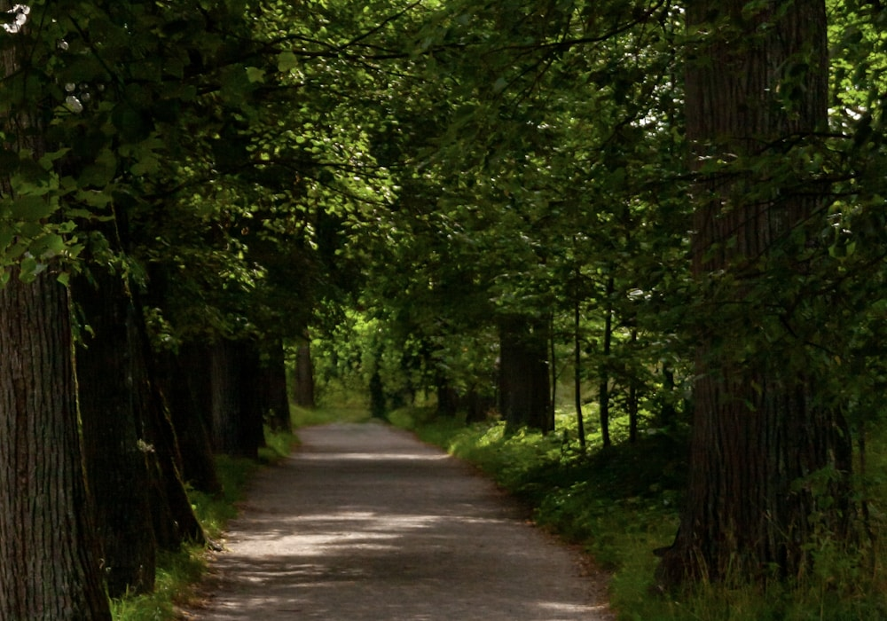

01 / ЯСНОСТЬКаждой мысли —
Каждой мысли —
своё место
Разгрузите голову. Соберите главное
в короткий, понятный план.
Мой спокойный день ✳
1 из 3 завершено
Соберите мысли, задачи и внимание в одном месте.
Хорошая работа начинается со спокойствия.
Мы верим в работу без лишнего напряжения.
Немного структуры. Место для вдохновения. И свой темп.
Разгрузите голову. Соберите главное
в короткий, понятный план.
Пауза — часть процесса.
Оставляйте место для жизни.
Меньше отвлечений.
Больше глубокого погружения.
25 минут на одну задачу.
Без спешки и переключений.
 целиком
целикомНе нужно держать всё в голове.
Выберите главное. Остальное может подождать.
В центре внимания
На спокойную работу
Чтобы выдохнуть
Как выбрать одно важное дело на деньНачните не со списка дел, а с вопроса: какое завершённое дело сделает сегодняшний день осмысленным? Выберите конкретный результат, который действительно зависит от вас.
Сформулируйте следующий шаг так, чтобы к нему можно было приступить сразу. Вместо «сделать проект» — «написать первые три абзаца». Всё остальное оставьте в отдельном списке: к нему можно вернуться после фокус-сессии.
 Маленький ритуал перед большой задачей
Маленький ритуал перед большой задачейОсвободите стол от вещей, которые сейчас не нужны. Оставьте перед собой только материалы для одной задачи. Закройте лишние вкладки и положите телефон вне поля зрения.
Запишите, с чего начнёте, и включите таймер. Не нужно ждать особого настроения: ритуал помогает обозначить простую границу между подготовкой и самой работой.

Пауза, в которой действительно можно выдохнутьПосле рабочего отрезка отойдите от экрана. Посмотрите в окно, налейте воды или пройдитесь. Дайте вниманию немного пространства без нового потока сообщений.
Перед возвращением спросите себя: продолжить начатое, изменить следующий шаг или завершить работу? Пауза нужна не для того, чтобы успеть ещё одно дело, а чтобы заметить своё состояние.